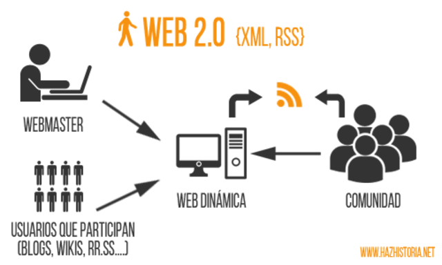

Línea del Tiempo Evolución de la Web
2004
Web 2.0

Segunda Generación de Tecnología Web de aplicaciones
Dinámicas por O’Reilly
Basada en las comunidades de Usuarios e intercambio de información
totalmente controlada por los usuarios
Posibilita la conexión de personas con personas
Esta web ofreció la oportunidad de intercambio de
información entre grupos personas